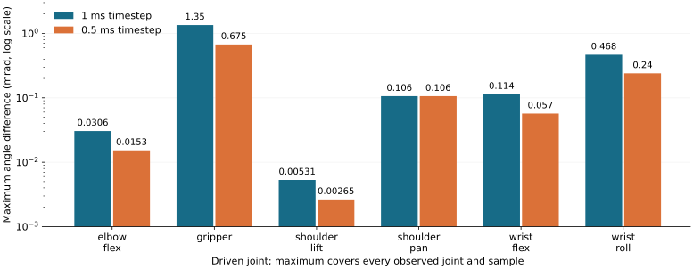
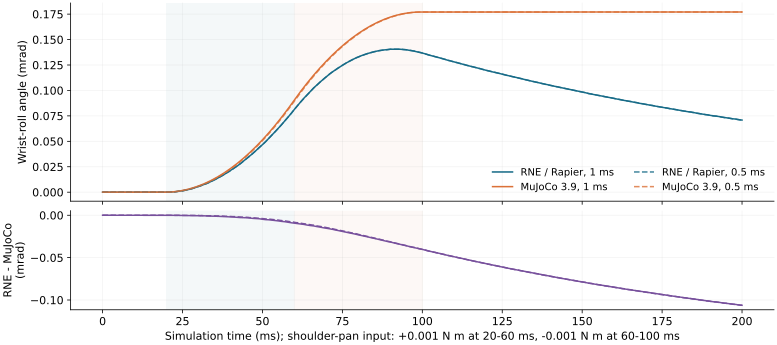

LeKiwiとSO-101 開発方針とMuJoCo比較
ROBOT NATIVE ENGINE · DEVELOPMENT BRIEF · 2026 10 29
LeKiwiとSO-101で
MuJoCoを超えるための開発方針
接触を伴うトルク制御学習で、必要な物理品質を満たしたまま
目標成功率に早く到達する。
96 / 96外力から回復
6方向 × 2強度 × 8目標。
既存制御器を再学習せず検証。
14 条件MuJoCoと共通比較
同じURDF・トルク配列。
固定台座、無重力、接触なし。
次の焦点小トルク応答の残差
刻みを半分にしても残る差を
切り分け、原因を測定で確かめる。
実機を使わない開発。今回の比較はRNE/Rapier経路であり、RNE独自バックエンドの優位性を示す測定ではない。
EVIDENCE AND SCOPE
二つの検証を区別する
制御の検証外力回復 96試行
- 接触世界のLeKiwi＋SO-101
- 手首リンクに2 N／4 Nを約0.1秒
- 押す前に2秒保持、解除後に新たな2秒保持
- 96試行すべてで保持を崩した後に回復
既存8目標に12条件を適用。未知姿勢への汎化や、衝突物体による打撃への耐性はこの結果の対象外。
力学の基礎比較SO-101の14条件
- 固定台座、無重力、接触・関節制限なし
- 6関節への個別入力＋無入力
- ±0.001 N·m、200 msの応答
- 1 ms／0.5 msの刻みで全関節を観測
RNE/RapierとMuJoCo 3.9.0。実行時間は状態取得などを含み、ソルバ単体の速度順位には使わない。
解析解で入力モデルを確認：単軸ローターと、重心ずれ・慣性座標回転を含むローターを検証。慣性テンソルをリンク座標へ統一することで、両エンジンが同じ解析解の試験を満たした。
CROSS SIMULATOR RESPONSE
多くの差は時間刻みを半分にすると縮まる

全条件の最大角度差：0.001349 → 0.000675 rad
棒の単位はmrad、縦軸は対数。最大値は入力した関節だけでなく、全観測関節・全時刻から求めた。
NEXT INVESTIGATION
肩旋回入力で、手首回転の差が残る

最大残差は約0.000106 rad。1 msと0.5 msでほぼ同じ。
原因は未特定。入力振幅・時間刻み・初期加速度を変えて切り分ける。モデル変換、実効慣性、数値精度、微小入力処理を仮説として調べる。
DEVELOPMENT GATES
物理品質を合格条件にして、性能を比較する
| 順序 | 次へ進むための確認 |
|---|
| A 残差の診断 | 共通モデルと初期加速度を照合。原因または未解消範囲を説明する。 |
| B 重力・関節制限 | 保持・振動・制限到達を比較し、解析可能な問題の回帰試験を通す。 |
| C 接触品質 | 落下・斜面・箱押しで侵入量、力積、滑り、エネルギーを測る。 |
| D 独立並列環境 | 同一CPU条件で1／4／8／16環境。反復測定で速度・メモリ・リセット時間を比較。 |
| E 学習効率 | 同じ学習器・報酬・予算で、目標成功率に達する時間を複数seedで評価。 |
| F 独自物理経路 | 同じ評価器にrne_physics_nativeを接続し、Rapier経路とは別系列で報告する。 |
この表は今後の計画。接触を省く、品質を下げる、成功したseedだけを選ぶことで得た速度向上は、優位性の根拠にしない。
NEXT CHANGE AND REPRODUCTION
次の1 PRは、小トルク応答の診断
実装する内容
- 振幅0.001／0.01 N·m、刻み1／0.5／0.25 msを比較
- 初期加速度と全関節の結合応答を出力
- 残差の原因を絞り、解析解・外力回復試験で回帰確認
原因が残る場合も測定範囲を記録する。許容値を緩めて解決扱いにしない。
再現できる成果物
- 共通URDFと全トルク配列
- 14条件の位置・速度の全軌跡
- モデル・実行ファイルのハッシュ
- CIで比較を生成し、同じ環境で完全再生
ローカル検証：Rust 53件、Python 26件、ワークスペースClippy、14条件の完全再生が成功。全体CIの最新状態はPRを参照。
資料と手順：docs/LEKIWI_MUJOCO_DEVELOPMENT.md
測定値：examples/116_robot_workbench/python/results/so101_cross_sim.json.gz
実装：PR #456 外力回復 ／ PR #457 MuJoCo比較